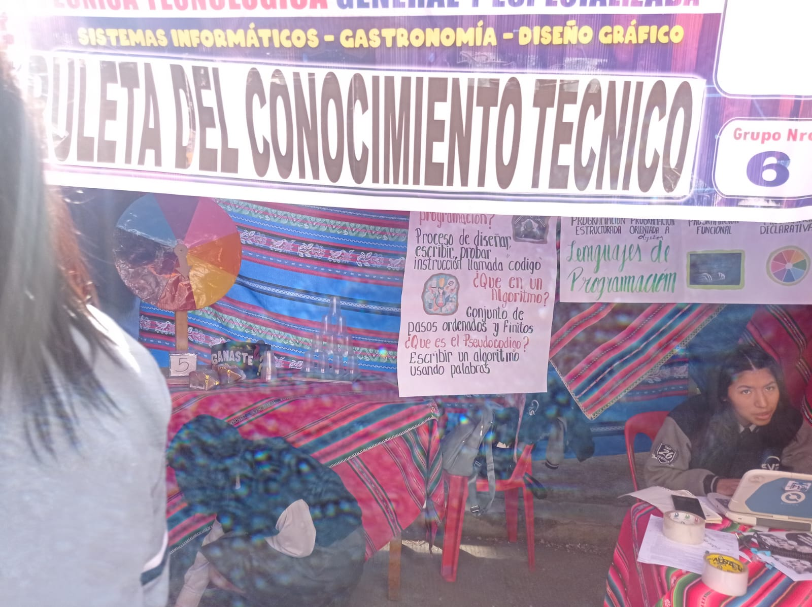
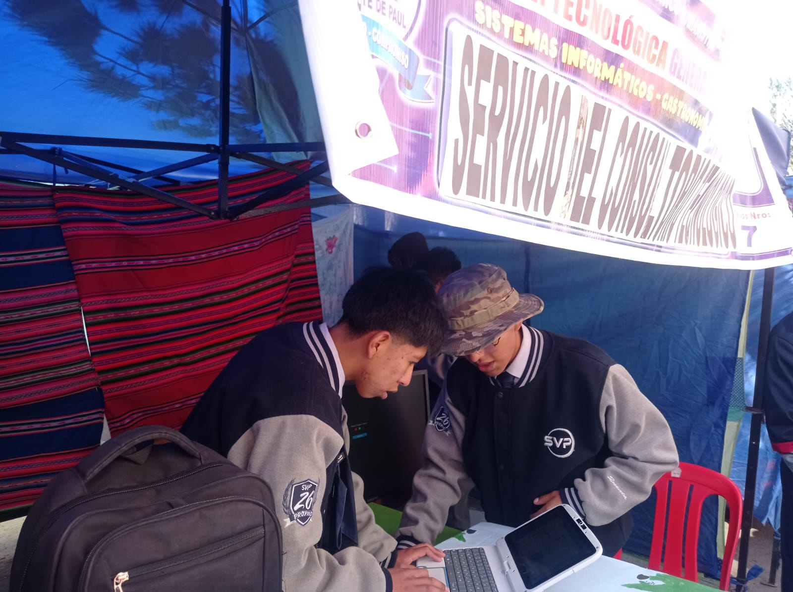
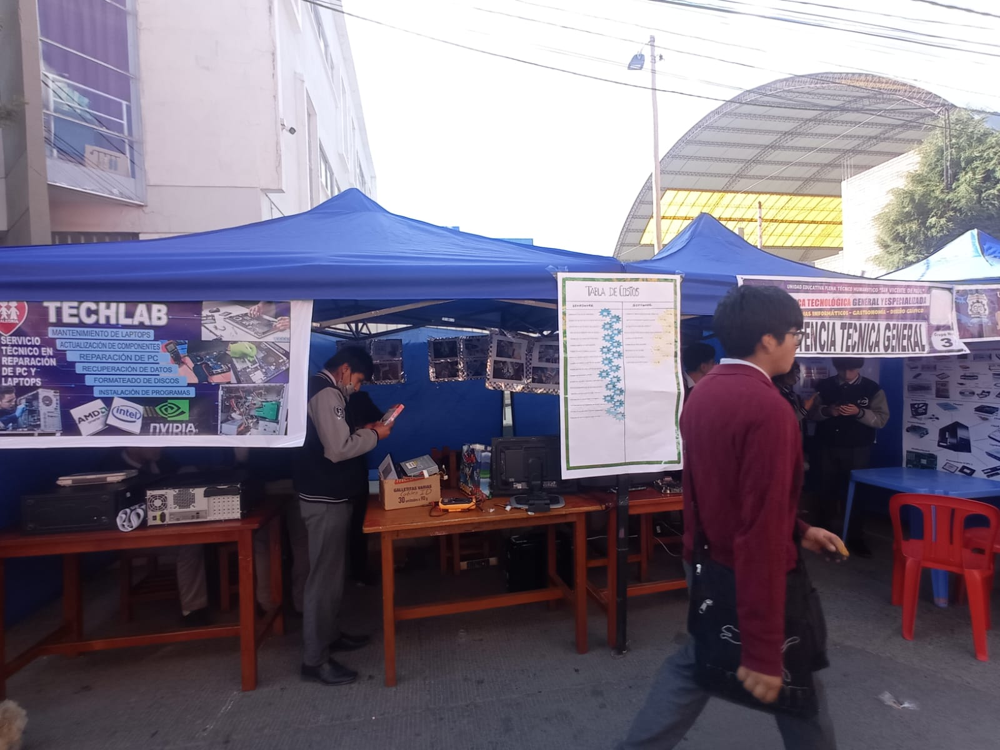
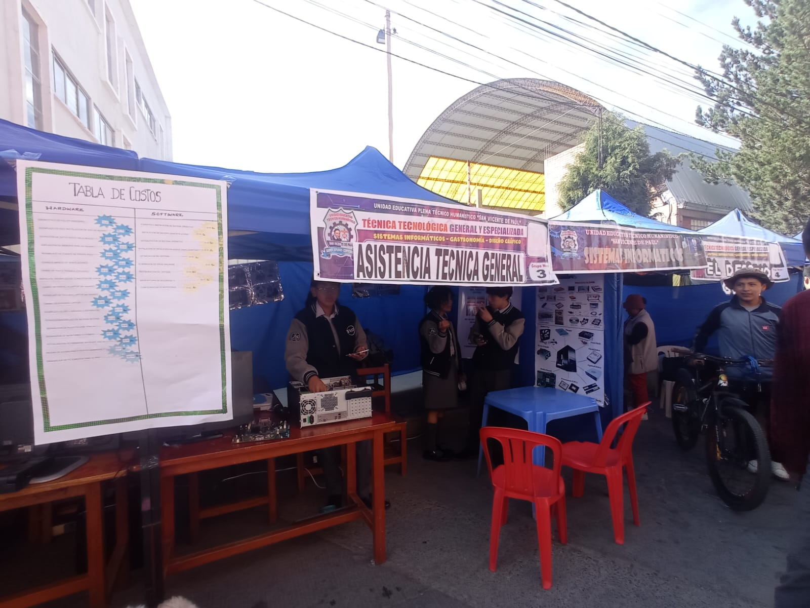

Expocion
29 Quispe Mainaza Bianca Nicol
- Voz baja:
Aunque el juardo asignado pudo escuchar la expocicion, fue algo complicado por la voz vaja que tenia
- Terminologia Tecnica:
Si bien tubo difilcutades con la Voz, pudo explicar de buena forma el tema asignado, siendo que
hasta un estudiante de primeros años de secundaria podria entender, sin embargo no se uso mucho la
Terminologia Tecnica
05 Castañeta Quispe Mayra
- Olvido de palabras:
Aunque conosia el tema y podia exponer de una manera sensilla, tubo el problema de confudirse a la
hora de hablar, llrgando a trabarse y a olvidar palabras quedando en blanco o diciendo "em" para
recordar (esto resalta a comparacion de la otra expocitora)
- Terminologia Tecnica:
La terminologia Tecniva falto a la hora de exponer, pero lo pudo dicimular al exponer temas algo
complejos
Organizacion
integrates:
·05 Castañeta Quispe Mayra
·06 Chambilla Condori Adriana Helen
·14 Mamani Apaza Yuyari Domy (Jefe de Grupo)
·16 Mamani Condori Milenka Aracely
·29 Quispe Mainaza Bianca Nicol
problemas principales:
Con respecto a los problemas hubo :
· Problemas en la expocicion: Por la modificacion del propocito de la feria productiva, este grupo tubo
problemas teiendo la pregunta ¿Quie bamos a exponer?, ya que este grupo era principalmente para ganar
ingresos y no tenian algo para poder exponer, almenos no de forma directa
· Interes: En este grupo hubo un Interes medianamente nulo (Puede que haya sido por el tema de la dansa
que se realizara el 28-Agosto-2025, ya que dos de sus integrantes son la Vise-presidenta y la Secretaria de
haciendas)
Feria

En la feria existieron varios datos relebantes tanto positivos como negativos:
Faltas: El grupo no llego a la hora establecida (7:00) a exepcion de un integrante (16
Mamani Condori Milenka Aracely)
Carpa: La carpa fue decorada de forma creatiba y hermosa
Limpieza: Fue limpiada a la hora de retirarse
Recaudar Fondos: Aunque al inicio no le fue tan bien, despues de un rato obtubieron
ganancias
Expocicion: Pudieron Exponer muy bien a pesar de tener unos errores
Acticud: Aunque devez en cuando tenian una actitud mala (estar algo enojadas), su actitud a
los clientes y jurados fue amable y gentil
Expocion
27 Quenta Visaluque Dan Franco
- Habla de forma rapida:
A la hora de exponer el estudiante hablo demaciasdo rapido a tal punto que ciertas palabras no
llegaron a entenderse, aun asi la expocicion se pudo entender
- Extender el Tema:
El tiempo de expocicion se extendio demaciado yegando a ocupar el 50% de tiempo de la expocicion del
grupo sin embargo con esto sellagaron a cubrir mas partes de su tema
28 Quispe Gonzales Luis Isrrael
- Terminologia Tecnica:
Aunque tubo un buen desempeño en la expocicion no uso la Terminologia Tecnica (todo lo demas fue
resaltante y bien estructurado)
17 Mamani Copa Ever
(no recaudado muchos datos)
- Problemas con las palabras:
Aunque si pudo exponer de forma fluida se confuncia en pocas palabras y llego a olvida(quedarse en
blanco) en almenos 2 ocaciones
- Terminologia Tecnica:
No uso terminologia tecnica en su expocicion
21 Mamani Tarqui John
(no recaudado muchos datos)
- Problemas con las palabras:
Aunque si pudo exponer de forma fluida se confuncia en pocas palabras y llego a olvida(quedarse en
blanco) en almenos 2 ocaciones
- Terminologia Tecnica:
No uso terminologia tecnica en su expocicion
Curiosamente es similar al estudiante 17 Mamani Copa Ever
Organizacion
integrates:
·10 Gutierres Cruz Sneyder
·17 Mamani Copa Ever
·21 Mamani Tarqui John
·27 Quenta Visaluque Dan Franco
·28 Quispe Gonzales Luis Isrrael
problemas principales:
solo es destacable el interes hacia la feri que recoria de poco a medo interesados
Feria

En la feria existieron varios datos relebantes tanto positivos como negativos:
Faltas: Conducta infantil y Juguetona (ante el jurado se redujo mas no desaparecio)
Carpa: Aunque intentaros decorar con aguayos, la carpa se sentia basia (esto mismo fue
destacado por el Primer jurado)
Limpieza: Aunque si limpiaron la mayor parte de su sona asignada, les falto un poco
Recaudar Fondos: Este grupo no recaudo fondos (segun lo que observe), pero esto es porque la
tematica no llamaba la atencion
Expocicion: La expocicion fue adecuada y completa
Acticud: Su actitud ante el jurado era infantil, Amable y Alegre
Dato extra: El integrante ·10 Gutierres Cruz Sneyder estaba en la Pre-Militar
A ESTE GRUPO NO ANALISE COMO A LOS OTROS
SIN EMBARGO, SU PRODUCTIVIDAD Y DATOS, SON LOS MISMOS QUE
LOS ESTUDIANTES DEL 6to

